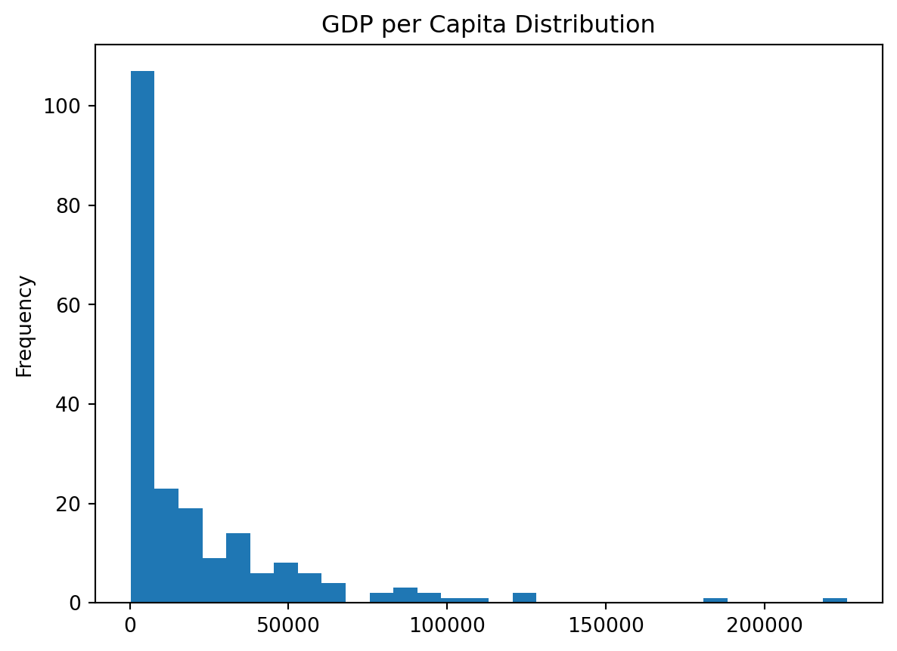
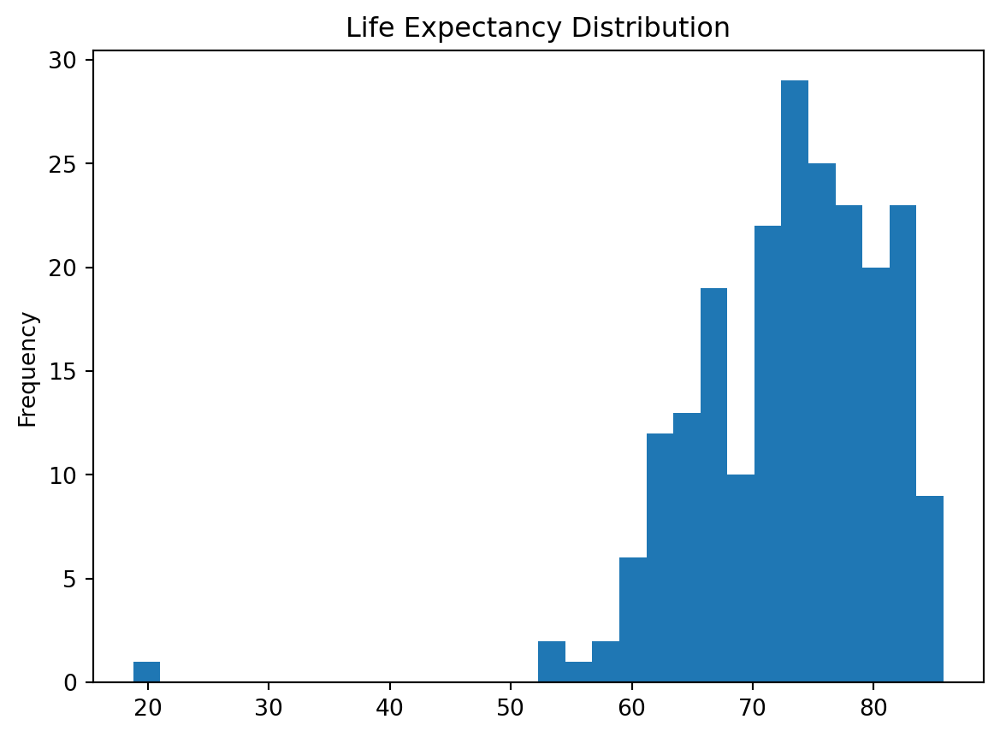

| country | inflation_rate | exports_gdp_share | gdp_growth_rate | gdp_per_capita | adult_literacy_rate | primary_school_enrolment_rate | education_expenditure_gdp_share | measles_immunisation_rate | health_expenditure_gdp_share | income_inequality | unemployment_rate | life_expectancy | total_population | |
|---|---|---|---|---|---|---|---|---|---|---|---|---|---|---|
| 0 | Afghanistan | 13.712102 | 18.380042 | -6.240172 | 357.261153 | NaN | NaN | NaN | 56.0 | 23.088169 | NaN | 14.100 | 65.617 | 40578842.0 |
| 1 | Albania | 6.725203 | 37.197076 | 4.826801 | 7756.961887 | NaN | 96.371230 | 2.729770 | 86.0 | 7.536462 | NaN | 10.785 | 78.769 | 2451636.0 |
| 2 | Algeria | 9.265516 | 30.791556 | 3.600000 | 4960.303343 | NaN | 105.747154 | 4.749247 | 79.0 | 3.634643 | NaN | 12.382 | 76.129 | 45477389.0 |
| 3 | American Samoa | NaN | 46.957520 | 1.735016 | 18017.458938 | NaN | NaN | NaN | NaN | NaN | NaN | NaN | 72.752 | 48342.0 |
| 4 | Andorra | NaN | NaN | 9.564612 | 42414.047986 | NaN | 90.465681 | 2.647280 | 98.0 | 7.521358 | NaN | NaN | 84.016 | 79705.0 |
WDI Analysis
Introduction
This report analyzes the World Development Indicators dataset.
Task 2 ## Load the dataset
Task 3 # Exploratory Data Analysis
In this section, I explore three indicators from the WDI dataset: - GDP per capita - Life expectancy - Inflation rate
((217, 14),
Index(['country', 'inflation_rate', 'exports_gdp_share', 'gdp_growth_rate',
'gdp_per_capita', 'adult_literacy_rate',
'primary_school_enrolment_rate', 'education_expenditure_gdp_share',
'measles_immunisation_rate', 'health_expenditure_gdp_share',
'income_inequality', 'unemployment_rate', 'life_expectancy',
'total_population'],
dtype='object'))Indicator 1: GDP per Capita
GDP per capita measures economic output per person and is a common proxy for living standards.
count 209.000000
mean 21142.747417
std 31040.300784
min 302.992505
25% 2899.160475
50% 7655.594210
75% 28360.304147
max 226052.001905
Name: gdp_per_capita, dtype: float64
Findings - The spread of the histogram is very narrow, with manny countries close to 0 - Right skew, as there are a few countries with very high GDP per Capital Distribution - There are 2 noticable outliers
Indicator 2: Life Expectancy
Life expectancy reflects overall health outcomes and quality of life.
count 217.000000
mean 73.108020
std 7.942539
min 18.818000
25% 67.788000
50% 74.160976
75% 78.531000
max 85.746000
Name: life_expectancy, dtype: float64
Findings - The range seems to be very clustered around 70-80 years - More variability compared to GDP per capita - One clear outlier at 20 years
Indicator 3: Inflation Rate
Inflation rate measures changes in price levels and can reflect macroeconomic stability.
count 178.000000
mean 12.645329
std 19.752353
min -6.687321
25% 5.361652
50% 7.985187
75% 12.259876
max 171.205491
Name: inflation_rate, dtype: float64
Findings - Inflation rates have extreme outliers from high-inflation countries - Most observations seem to be high at the 25-50% range - This shows that most countries are not economically stable
Task 4 ## Figure: GDP per capita vs Life expectancy

Figure: Top 10 countries by GDP per capita

Task 5 ## Table: Key statistics for selected indicators
| gdp_per_capita | life_expectancy | inflation_rate | |
|---|---|---|---|
| count | 209.00 | 217.00 | 178.00 |
| mean | 21142.75 | 73.11 | 12.65 |
| std | 31040.30 | 7.94 | 19.75 |
| min | 302.99 | 18.82 | -6.69 |
| median | 7655.59 | 74.16 | 7.99 |
| max | 226052.00 | 85.75 | 171.21 |
Task 6 As shown in ?@fig-gdp-life, countries with higher GDP per capita tend to have higher life expectancy.
?@fig-top10-gdp highlights how GDP per capita is concentrated among a small set of countries.
Summary statistics are reported in ?@tbl-key-stats.